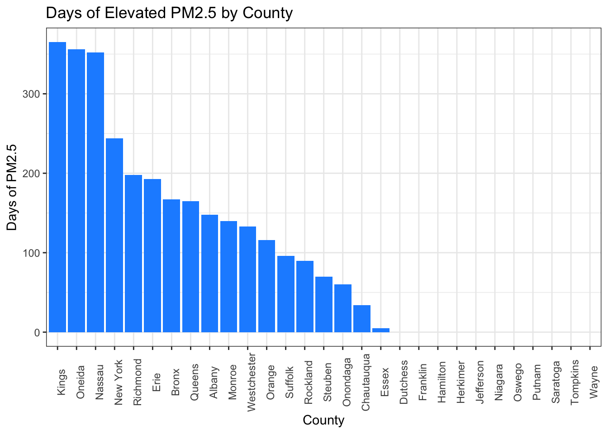
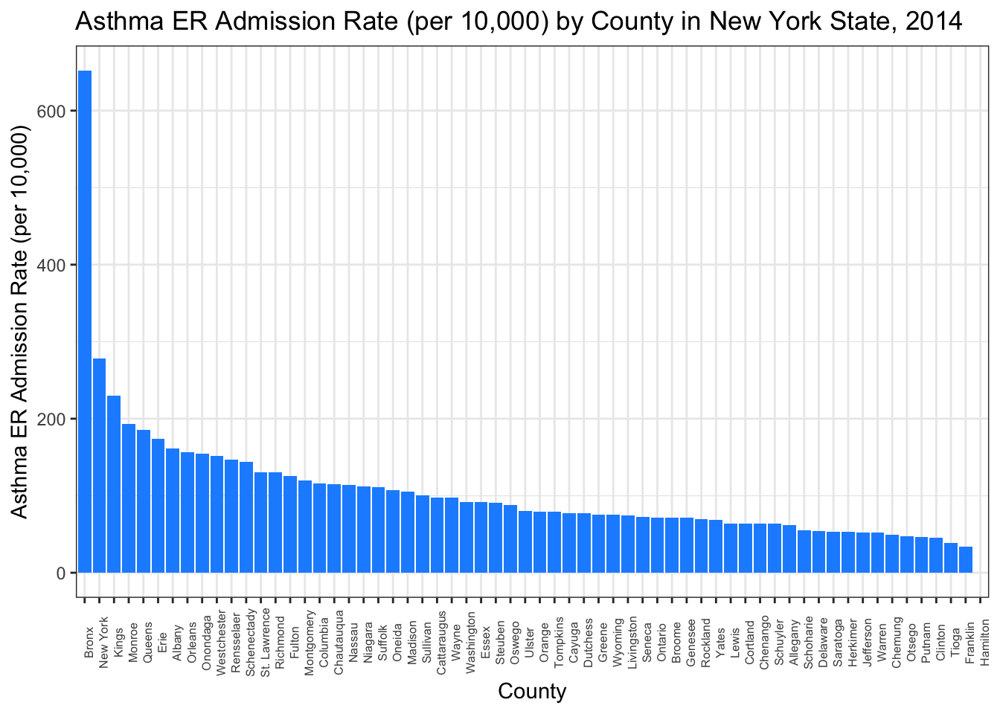
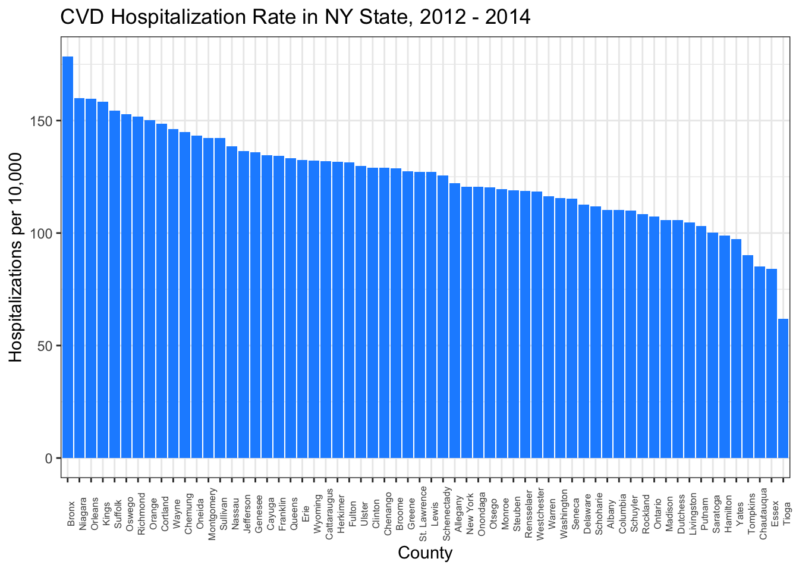

Initial PM2.5 data exploration was focused on New York City counties. However, limited data was available, so NY state county data were selected to demonstrate the relationship between PM2.5 and hospitalizations of asthma and CVD.
Over 2000-2014, levels of PM2.5 across all counties in New York State have steadily decreased.
PM_county_NYS = read_csv("./data/PM2.5_county_NYS.csv") %>%
janitor::clean_names() %>%
select(county_name, year, output, measure) %>%
separate(county_name, into = c("county", "delete", sep = " ")) %>%
select(-delete) %>%
mutate(county = recode(county, `New` = "New York")) %>%
select(county, year, output, measure)PM_plot_conc_allyears = PM_county_NYS %>%
filter(measure == "Micrograms/cubic meter (LC)") %>%
group_by(county, year) %>%
ggplot(aes(x = year, y = output, color = county)) +
geom_line() +
labs(title = "Ambient PM2.5 Concentrations in New York State, 2000-2014",
x = "Year",
y = "PM2.5 (ug/m3)")
PM_plot_conc_allyearsNext, we wanted to assess how PM2.5 exposure varied across counties in NY State.
nyc_pm25 = read_csv(file = "./data/annual_aqi_by_county_2014.csv") %>%
janitor::clean_names() %>%
filter(state == "New York")pm_hist = nyc_pm25 %>%
ggplot(aes(x = reorder(county, -days_pm2_5), y = days_pm2_5)) +
labs(
title = "Days of PM2.5 by County",
x = "County",
y = "Days with PM2.5") +
geom_histogram(stat = "identity") + theme(axis.text.x = element_text(angle = 90))
pm_hist
Kings, Oneida, and Nassau reported the most number of days of PM2.5.
Literature shows that exposure to PM2.5 is associated with asthma and cardiovascular disease. Therefore, we wanted to assess hospitalization of asthma and CVD across counties.
asthma_ER = read_csv("./data/Asthma_ER_Rate_10000.csv") %>%
janitor::clean_names() %>%
select(county_name, percentage_rate_ratio, data_years) %>%
rename(asthma_ER_percent_rate = percentage_rate_ratio,
asthma_ER_years = data_years) %>%
filter(!county_name %in% c("Long Island", "New York City", "Mid-Hudson",
"Capital Region", "Mohawk Valley",
"North Country", "Tug Hill Seaway",
"Central NY", "Southern Tier", "Finger Lakes",
"Western NY", "New York State (excluding NYC)",
"New York State")) %>%
#to remove non-county regions
rename(county = county_name)asthma_plot_14 = asthma_ER %>%
ggplot(aes(x = reorder(county, -asthma_ER_percent_rate),
y = asthma_ER_percent_rate, group = 1)) +
geom_histogram(stat = "identity") +
theme(axis.text.x = element_text(angle = 90)) +
labs(x = "County",
y = "Asthma ER Admission Rate (per 10,000)",
title = "Asthma Emergency Room (ER) Admission Rate (per 10,000) by County in New York State, 2014")
## Warning: Ignoring unknown parameters: binwidth, bins, pad
asthma_plot_14
## Warning: Removed 1 rows containing missing values (position_stack).
cvd_data = read_csv(file = "./data/Community_Health__Age-adjusted_Cardiovascular_Disease_Hospitalization_Rate_per_10_000_by_County_Map__Latest_Data.csv") %>%
janitor::clean_names() %>%
filter(health_topic %in% "Cardiovascular Disease Indicators") %>%
select(county_name, event_count, average_number_of_denominator,
percent_rate) %>%
rename(county = county_name)cvd_data %>%
ggplot(aes(x = reorder(county, -percent_rate), y = percent_rate)) +
labs(
title = "CVD Hospitalization Rate in NY State, 2012 - 2014",
x = "County",
y = "Hospitalizations per 10,000") +
geom_histogram(stat = "identity") +
theme_bw() +
theme(axis.text.x = element_text(angle = 90), legend.position = "none")
## Warning: Ignoring unknown parameters: binwidth, bins, pad
Bronx recorded the highest rates of asthma emergency room admissions, which was more than double that of New York county (second highest rate), and nearly triple that of Kings county (third highest rate). Bronx also recorded the highest rates of cardiovascular hospitalization, with Niagara and Orleans following.